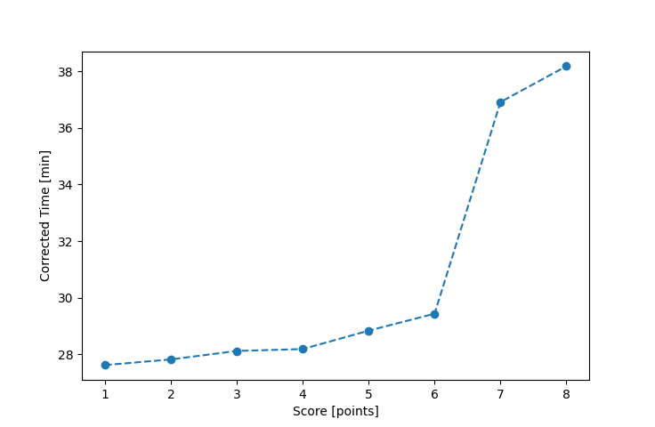

| Wind: | 2-3 (BFT) |
|---|---|
| RC: | Nick_HLewis_V |
| Date: | June 14, 2020 |
| Notes: | M2 Starboard Rounding |
| Rank / Score | Name | Boat | Input Time [mm:ss] | Input Offset [mm:ss] | Race Time [mm:ss] | Race Time [s] | Handicap | Corrected Time [s] | Corrected Time [mm:ss] |
|---|---|---|---|---|---|---|---|---|---|
| 1.0 | Mike_F | SF | 27:44 | 00:00 | 27:44 | 1664 | 1.00400 | 1657 | 27:37 |
| 2.0 | Nedra_F | SF | 27:56 | 00:00 | 27:56 | 1676 | 1.00400 | 1669 | 27:49 |
| 3.0 | Ron_F | F5 | 27:10 | 00:00 | 27:10 | 1630 | 0.96600 | 1687 | 28:07 |
| 4.0 | Bill_P | SF | 28:18 | 00:00 | 28:18 | 1698 | 1.00400 | 1691 | 28:11 |
| 5.0 | Ian_O | SF | 28:57 | 00:00 | 28:57 | 1737 | 1.00400 | 1730 | 28:50 |
| 6.0 | Rod_H | LASEM | 28:38 | 00:00 | 28:38 | 1718 | 0.97300 | 1766 | 29:26 |
| 7.0 | Matt_L | DLPSR | 40:06 | 00:00 | 40:06 | 2406 | 1.08600 | 2215 | 36:55 |
| 8.0 | Jim_S | SF | 38:20 | 00:00 | 38:20 | 2300 | 1.00400 | 2291 | 38:11 |

Application Notes:
All race results are unofficial
View source code at https://github.com/cessnao3/portsmouthracecalc/